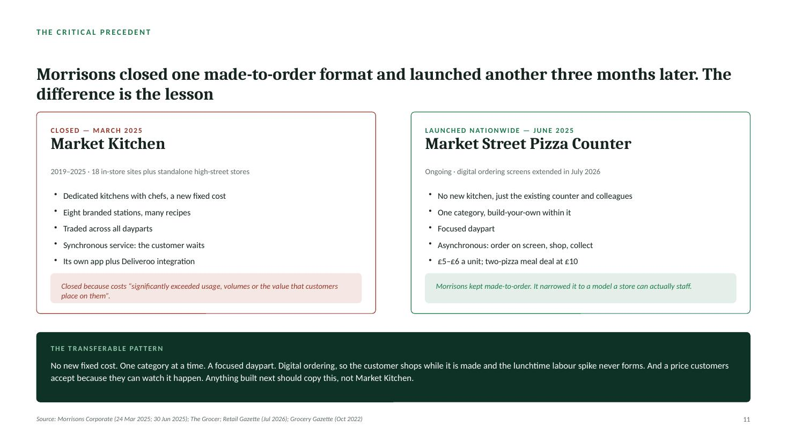
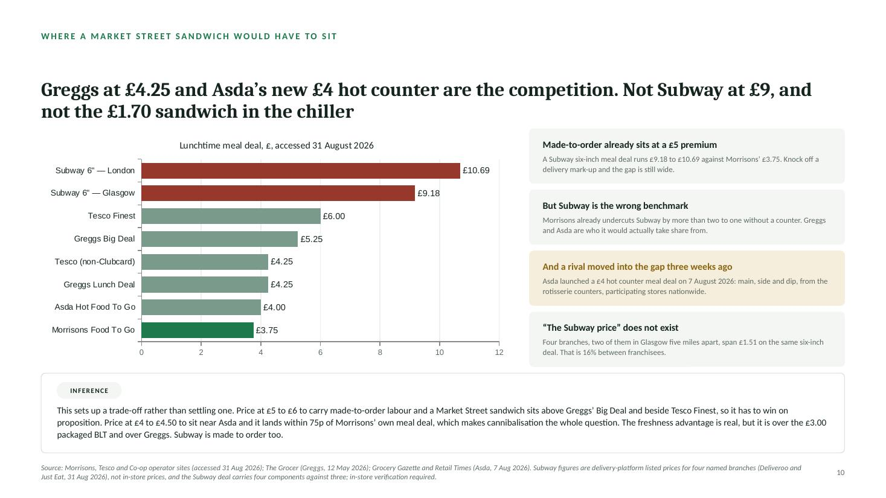

The argument
Morrisons closed 70 Market Street meat and fish counters in March 2025 because the costs were "significantly out of line with usage, volumes or the value that customers place on them". Sixteen months later it started reopening them, because they are "part of our DNA, a real differentiator".
Both decisions were made for the whole estate. Both were about something Morrisons' own chief executive describes as varying sharply from store to store: "whereas at some stores fresh counters are thriving, many are sad-looking and ignored."
What made the reversal possible, in Morrisons' own words, was an improvement in "waste yield". No number has ever been published. So the company has effectively said that counter viability comes down to how much you decide to produce, and it has no public measure of how well any counter does it.

Why I looked at it
Three things kept coming up on shift.
Nobody knows what is in the freezer. Boxes go in, boxes come out, and the only way to find out what is left is to go and look, usually across several freezers, usually when you have already run out. So you order twenty boxes because you are down to one, and half of them sit there for a month.
Nobody knows what sold. Production is decided by experience and by looking at the counter. Get it wrong upward and it becomes markdown, then waste. Get it wrong downward, which happens more, and the counter is empty at seven o'clock and the sale is just gone.
Customers keep telling us what they want. People buying ham say, without being asked, that it is for a sandwich. Meanwhile the store sells packaged sandwiches twenty feet away containing none of that meat.
Those are observations from one store. The deck treats them as hypotheses and tests them against public evidence. Where the evidence does not settle a question, it says so and names the internal data that would.
What I found
Morrisons is the only UK grocer that went back. Tesco went from around 790 counter stores to 279 between 2019 and 2022. Sainsbury's closed all 420 in 2020 and banked £60m of operating cost savings. Asda swapped counters for self-service hot stations in 2020. Aldi, Lidl, Co-op and M&S never had them. Only Waitrose held on, and only Morrisons reversed. The differentiation is real and nobody is competing for it, which makes it worth more than Morrisons currently claims.
Counter waste is not a tonnage story. Retail is 2% of UK food waste, and Tesco's disclosed figure is 0.5% of food handled, so anyone arguing "reduce food waste" gets told, correctly, that it barely registers. The number that matters comes from ECR Retail Loss and the University of Portsmouth: the full cost of handling unsold food is 1.8% of retail sales revenue, against grocery net margins of 1 to 3%. Supermarkets sell over 97% of what they hold. The cost is all in managing the last 3%.
It fails in both directions, and one side never gets counted. Too much becomes markdown. Too little empties the counter, and Retail Economics and DHL put £2.1bn of UK grocery sales a year at risk from stock gaps. That is bigger than the waste side and it never shows up in a waste metric.
Two blanks in Morrisons' technology, and they are the two decisions a counter makes daily. Blue Yonder handles retail SKU replenishment across roughly 500 stores. Focal Systems watches shelf gaps. A store execution platform covers tasks and compliance across around 500 stores and 70,000 colleagues. Too Good To Go clears surplus. Nothing published tracks bulk ingredient stock behind the counter, and nothing published records what was produced and sold there.
Greggs and Asda are the competition, not Subway. A Subway six-inch meal deal runs £9.18 to £10.69 across four named branches against Morrisons' £3.75, so the price headroom is real. But Morrisons already undercuts Subway more than two to one without a counter. Greggs is holding its Lunch Deal at £4.25, and Asda launched a £4 hot counter meal deal on 7 August 2026. The freshness advantage is genuine, but it sits over the £3.00 packaged BLT and over Greggs. Subway is made to order too.
Morrisons has already learned which made-to-order model works. Market Kitchen ran from 2019 with chefs, dedicated kitchens and eight branded stations across all dayparts. All 18 sites closed in March 2025. Three months later Morrisons launched a nationwide Market Street pizza counter: one category, build your own, digital screens so you order and carry on shopping, £5 to £6. Whatever gets built next should copy that, not Market Kitchen.
And five things I wanted to recommend turned out to be already solved. Digital food safety checks, ordering and replenishment, shelf availability monitoring, surplus redistribution, and a substitution lookup that fails on materiality anyway. Finding that out is the work, not a gap in it.

What I recommend
1. Close the two data gaps under every counter decision. Scan a box out of the freezer as it is opened, which gives a running count nobody has to walk the freezers for and a weekly consumption rate to order against. Log production and sales digitally so tomorrow's plan comes from yesterday's demand. Once consumption is known, ordering can run automatically off the engine already placing 13m retail orders a day. This ends the guessing.
2. Build a tiered made-to-order counter from Market Street ingredients. Priced by what goes in it: one meat, two meats, add cheese, add salad. Carved to order from the deli joint on bread baked in store, bundled with hot counter sides instead of crisps. No new kitchen and no new skill, because colleagues already work across those counters. Ordered on a screen so the customer shops while it is made. This fixes utilisation.
3. Automate reductions and move counter tasks onto phones. A markdown round takes a colleague off the counter for hours, production stops, and the sale goes. That cost lands on the sales line, not the wage bill. This returns selling hours.
4. Decide counter format store by store, on criteria Morrisons publishes. Which is what would have prevented an expensive closure followed by an expensive reversal.
The first three close a loop: know what you have and what sold, sell more of it at full value, then recover the rest without pulling people off the counter. Each one comes with a three-store pilot, matched control stores, and success thresholds written down before launch rather than after.

What I could not answer
Four questions decide whether any of this is right, and none can be answered from outside the company:
- What does a counter actually yield? No UK retailer publishes counter waste rates.
- What is counter labour productivity? No published research exists anywhere in UK grocery, which is the biggest gap in the pack.
- Why did Market Kitchen really fail? There is no public post-mortem, and it is the closest precedent to Recommendation 2.
- Will customers pay more for made to order? No credible UK data puts a number on it.
The deck names all four rather than estimating around them. There are twelve more in the source register. The first-hand observations come from one store, are not evidence of a company-wide pattern, and are labelled that way throughout.
How I built it
Research came first, before anything went on a slide. Every claim carried over from my earlier notes was re-checked against primary sources, which caught four errors, including a counter-reinstatement figure I had backwards and a £940m cost saving I had been describing as an AI number when Morrisons only says AI contributed to it.
Sources are tiered: Morrisons corporate publications and results statements first, then The Grocer, Retail Gazette, Retail Week and equivalent, then industry bodies, peer-reviewed retail-loss research, and vendor material labelled as vendor claims.
Nothing is invented. No Morrisons costs, margins, waste rates, volumes or financial projections appear anywhere. I built a unit economics model early on and deliberately left it out, because projecting a profit for Morrisons would have meant assuming their input costs, their cannibalisation rate and their demand, which are the three things that actually decide the answer. Every claim in the deck is labelled: public fact, first-hand observation, hypothesis, inference, recommendation, or internal validation required. That last one gets used a lot, on purpose.